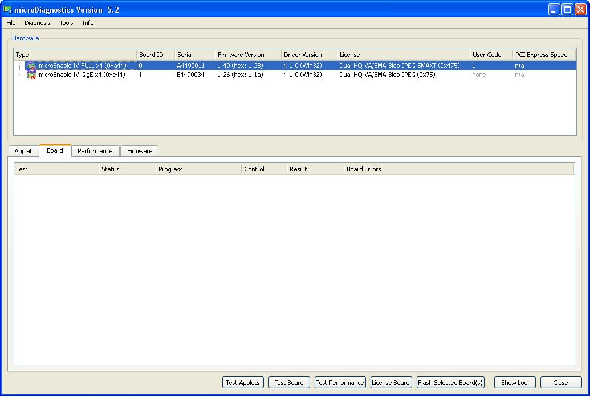
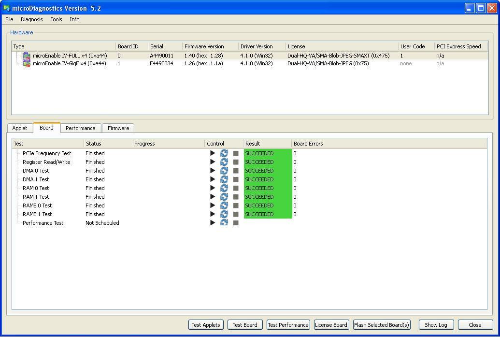

microDiagnostics 5 for microEnable IV and microEnable 5
Overview
- Run various diagnostic routines directly on the frame grabber, including
- Applet tests,
- Hardware tests,
- Performance tests.
- Flash the frame grabber with a new applet (only required with microEnable 5 frame grabbers)
- License your frame grabber and applets, if required (for detailes, see section Licensing.)
To start microDiagnostics:
1. Double-click the microDiagnostics entry in the Start Menu (or, in your runtime installation directory, open the bin folder and double-click the file microDiagnostics.exe).
The following program window opens:

Hardware Listing
In the upper pane, you find information about all microEnable IV frame grabbers installed in the PC.
Information on installed frame grabbers:
Type: Specific grabber model
Board ID: Board ID of individual frame grabber within the image aqcquisition system; important when using the SDK interface.
Serial: Serial number of individual frame grabber.
Firmware Version: Version of the firmware the frame grabber is using.
Driver Version: Version number of the device driver that is currently installed.
License: License that is installed for the specific frame grabber.
User Code: Special Licence for individual licensing.
PCI Express Speed: information about the features of the PCIe slot the frame grabber is connected to.
IYou can re-organize the order of board numbers by clicking Tools -> Reorder Boards.
Software Listing and Test
With a click at the "Test Applets" button, the software test shows if the installed aquisition applets can be loaded.
Hardware Test
With a click at the "Test Board" button, the following shown dialog appears. It tests the PCI frequency, Registers will be written and read for a test and DMA and RAM are checked.
A red marked field at PCI frequency shows a possible problem. Please note, that it does not have to be a defective hardware! Please check the frequency within BIOS settings which is neccessary to work with correct trigger signal frequencies in case of grabber controlled trigger setup.
Additionally a performance test can be done by clicking the "Run" button. Please note, that the performance test may take a while. The dialog below shows an example of a test result which is differing on each computer. The results of the performance test can be displayed in the units MegaByte/s (default) or MiMyte/s. To change the units just use the drop down field "Transfer Rate Unit:" on top of the Hardware Test screen.
At the right site of the "Transfer Rate Unit" is a the "PCIe High Speed capable" indicator text. It informs if the frame grabber under test is plugged into a PCIe slot that is high speed capable or not.

| Back to Documentation Index |
Forward |